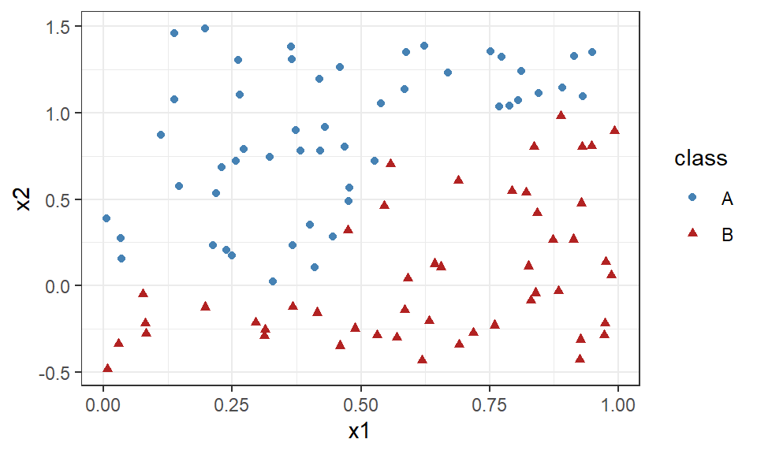
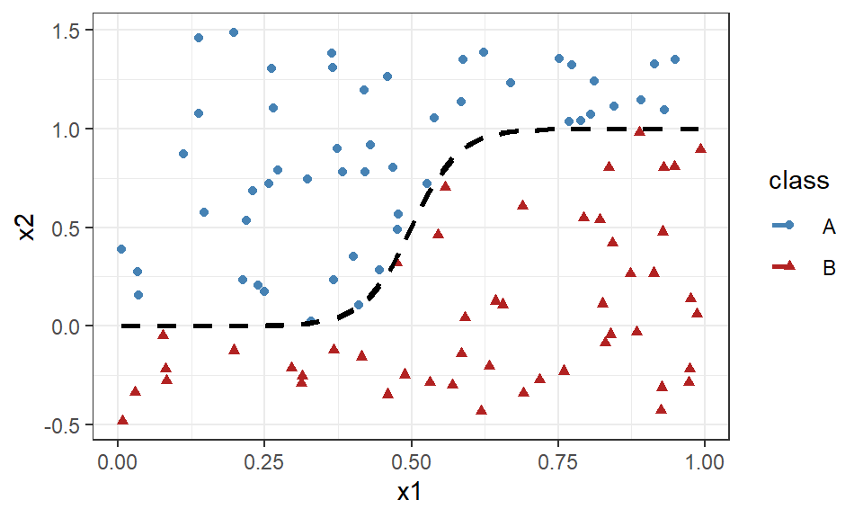
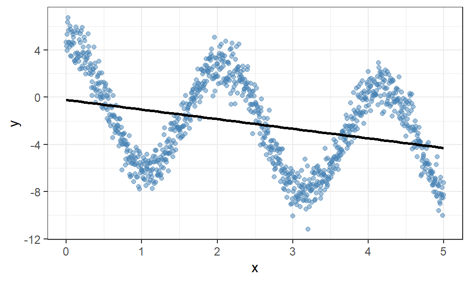
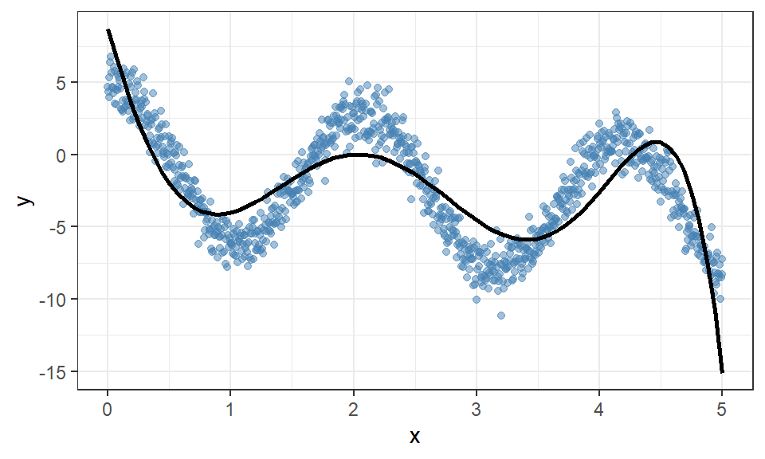
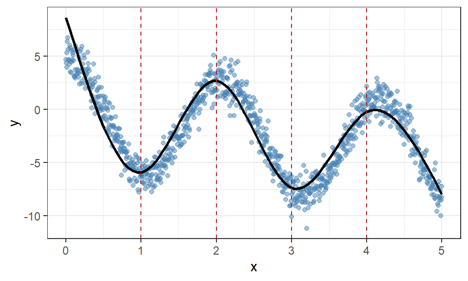
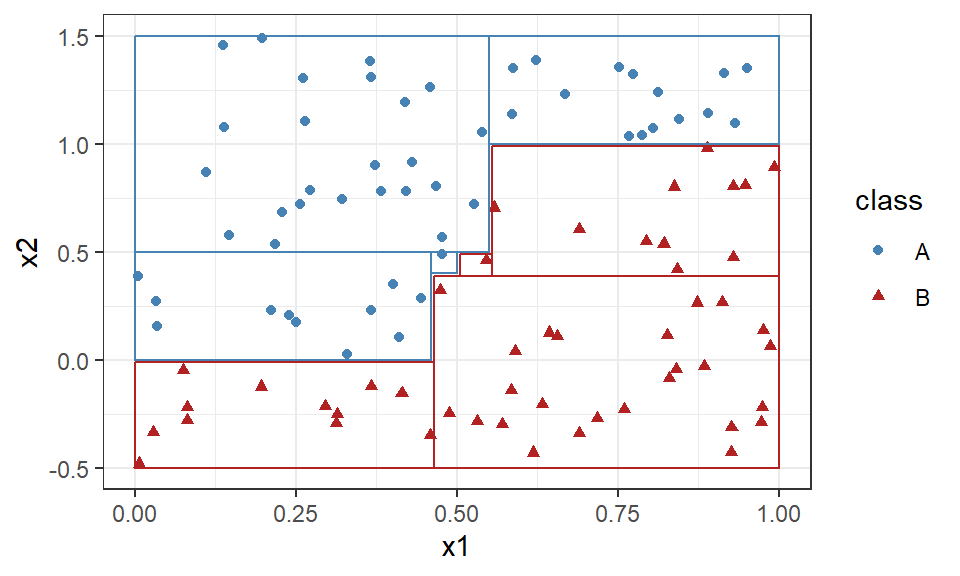
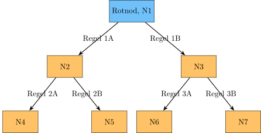

28 Splines och trädmodeller
I tidigare kapitel har vi fokuserat på linjära modeller som är lätta att träna och tolka, men de kommer inte kunna lösa alla sorters problem. Ta följande exempel inom klassificering:
Den sanna beslutsregeln som exakt separerar de två färgerna (klasserna) är \(x_2 \cdot (1 + exp(-25 \cdot (x_1 - 0.5))) > 1\). I bilden nedan visas gränsen som regeln skapar med en streckad linje där uttrycket är lika med 1.

Men hur skulle vi kunna hitta en linjär beslutsregel som motsvarar denna? Vad gör vi om en linjär modell inte passar till data?
28.1 Icke-linjära modeller
Vi kan ta ett enklare exempel med regression.
# Genererar icke-linjär data
x <- seq(0, 5, length.out = 1e3)
y <- 5*cos(x*3) - 1*x + rnorm(n = length(x))
Ett alternativ är att modellera polynom (se Avsnitt 10.2) men ordningen av polynomet är svår att bestämma och data kräver ofta en hög ordning för att få en bra anpassning.

Till och med ett polynom av ordning 6 räcker inte att modellera data på ett bra sätt i Figur 28.4. Polynom av hög ordning bidrar också till instabila anpassningar och numeriska problem i skattningen, då det är inte ett optimalt alternativ.
Vi skulle kunna dela upp data i olika områden och anpassa separata modeller för varje område som sedan knyts ihop till en sammanhängande modell. En sådan typ av metod är splines.
28.2 Splines
Målet med splines är att anpassa en stegvis polynomfunktion på en uppdelat data där vi sätter begränsningar i skarvarna för att få kontinuitet, kontinuerliga derivator och andra eftersökta egenskaper. De olika delarna av data separeras av knutar (eng. knot) som bryter data i olika delar och frihetsgrader i denna kontext beskriver antalet parametrar som anpassas.

Figur 28.5 visar hur vi kan dela upp datamaterialet med hjälp av fyra knutar (de röda strecken) och anpassa enklare polynom för varje område. I just denna figur har vi begränsat modellen i dess knutpunkter för att få en sammanhängande anpassning, men enklare funktioner såsom stegfunktioner, basfunktioner m.fl. kan också anpassas.
Splines anpassas i R med hjälp av ns() från paketet splines. Funktionen styrs av hyperparametern df som beskriver funktionens frihetsgrader vilket motsvarar antalet knutar + 1 som standard. I figuren ovan har vi valt 5 frihetsgrader som motsvarar 4 knutar på angivna platser, men valet av frihetsgrader bör väljas med hjälp av korsvalidering
ns(x, df = 5)
Notera
Generaliserade Additiva Modeller (GAM) är ett samlingsnamn för modeller som kombinerar olika typer av modeller inom olika områden eller variabler. Till exempel kan en GAM kombinera linjära modeller med splines.
CautionÖvning 1
När sambandet mellan en prediktor och responsvariabeln är icke-linjärt kan både polynomregression och splines användas. Vilka av följande påståenden om splines är korrekta?
- Sant. Frihetsgraderna motsvarar antalet parametrar som skattas i spline-modellen.
- Sant. Delintervallen avgränsas av knutpunkter, och villkor på kontinuitet och derivator används för att sammanfoga polynomdelarna.
- Sant. En vanlig polynomregression använder ett globalt polynom, medan en spline består av styckvisa polynom som anpassas inom olika delintervall.
- Falskt. Vid knutpunkterna används villkor som gör att polynomdelarna sammanfogas på ett kontinuerligt och jämnt sätt.
28.3 Trädmodeller
Ytterligare en metod som delar upp data och modellerar delar är trädmodeller. Istället för att använda knutar som brytpunkter delas variabelrummet in i icke-överlappande regioner (rektanglar) där alla observationer i samma region får samma anpassade värde.

Att identifiera vilken region som en observation hamnar i kan beskrivas i en trädstruktur, därav namnet trädmodeller, där gränserna för respektive region används som förgreningar. Det anpassade värdet inom regionen beräknas oftast genom ett enkelt medelvärde eller typvärde beroende på responsvariabelns typ.
En stor del av trädmodellernas träning styrs av hur vi kan dela upp variabelrummet på ett bra sätt. Vi kan börja med att presentera strukturen av modellen och lite terminologi. Följande diagram visar ett binärt träd där varje uppdelning sker med två utfall.

Ett träd består utav en rotnod där alla observationer börjar innan de går igenom ett antal regler via noder (N1-N7) innan de når ett löv (även kallad slutnod, N4-N7) där de sedan tilldelas ett värde på responsvariabeln. Denna struktur liknar ett släktträd vilket innebär att terminologin använder termer som förälder och barn för att beskriva relationen mellan noder. Till exempel är N2 föräldernod till N4 och N5, samt N6 är en barnnod till N3.
Reglerna skapas utifrån de förklarande variablerna i data beroende på dess variabeltyp. Kategoriska variabler omfattar två mängder med olika utfall, till exempel \(X_1 = \text{"Varmblodig"} \rightarrow\) N2 och \(X_1 = \text{"Kallblodig"} \rightarrow\) N3, medan kontinuerliga variabler delas upp utifrån olikheter, t.ex. eller \(X_2 \ge 150 \rightarrow\) N4 och \(X_2 < 150 \rightarrow\) N5.
Viktigt
En viktig aspekt av uppdelningen är att variabelns skala och typ ska bibehållas även i barnnoderna. Detta betyder specifikt för variabler som följer en ordinalskala att de två mängderna som används till uppdelningen måste också följa ordinalskalan inom och mellan sig.
28.3.1 Att skapa beslutsregler
Vilka regler, vilka variabler och dess värden, samt hur många regler som ett träd ska använda kan i regel göras på oändligt antal sätt. Vi måste därför effektivt kunna välja och jämföra regler samt bedöma när trädet ska sluta förgrenas och anse en nod vara ett löv. Ett sätt är att använda Hunt’s algoritm:
TipsHunt’s algoritm
- Givet nuvarande datamängd \(D_t = \{(X_i, Y_i), i = 1, \dots, n\}\) för den aktuella noden \(t\).
- Om alla \(Y_i\) är lika, markera \(t\) som ett löv och ge värdet \(Y_i\).
- Annars, använd en testregel för att dela upp \(D_t\) i flera delar \(D_{t_1}, \dots, D_{t_k}\) och upprepa 1-3 för alla barnnoder.
Testreglerna ser olika ut beroende på variabeltyp och dess skala:
- Binära eller nominala variabler: binär uppdelning
- Ordinala variabler: binär uppdelning som bevarar den ordinala skalan
- Intervallskala: binär uppdelning till icke-överlappande intervall
Att jämföra alla möjliga uppdelningar och värden är orimligt så vi behöver ytterligare en algoritm för att identifiera vilken variabel och vilken uppdelning som ger den bästa förbättringen av en vald kostnadsfunktion för nuvarande nod. Många av dessa algoritmer är ytterligare exempelpå giriga algoritmer, som alltid väljer den bästa förbättringen vid varje steg oavsett om en sämre uppdelning för stunden hade lett till en bättre uppdelning vid ett senare steg.
CART-algoritmen (eng. Classification And Regression Trees) beräknar informationsvinsten för en testregel som:
\[ \begin{aligned} \Delta = I(\text{förälder}) - I(\text{barn}),\\ \Delta = I(\text{förälder}) - \sum_j \frac{N(R_j)}{N} I(R_j) \end{aligned} \] där \(I(\cdot)\) är den valda kostnadsfunktionen/föroreningsmåttet, \(N\) är antal objekt i föräldranoden, \(R_j\) är barnnod \(j\) och \(N(R_j)\) är antal objekt i barnnod \(j\).
Informationsvinsten ger en möjlighet att optimera variabler och dess uppdelningar med hjälp av effektiva algoritmer.
CautionÖvning 2
CART-algoritmen ska välja en testregel för en föräldernod med 100 observationer och orenheten \(I(\text{förälder})=0.48\). Två möjliga testregler ger följande barnnoder: * Regel A: \(N(R_1)=20\) med \(I(R_1)=0.10\) och \(N(R_2)=80\) med \(I(R_2)=0.35\). * Regel B: \(N(R_1)=50\) med \(I(R_1)=0.24\) och \(N(R_2)=50\) med \(I(R_2)=0.28\).
Informationsvinsten beräknas som \(\Delta=I(\text{förälder})-\sum_j\frac{N(R_j)}{N}I(R_j)\). Vilka av följande påståenden är korrekta?
- Sant. Informationsvinsten blir \(0.48-0.30=0.18\).
- Sant. Den viktade orenheten är \((20/100)\cdot0.10+(80/100)\cdot0.35=0.30\).
- Sant. Den viktade orenheten är \((50/100)\cdot0.24+(50/100)\cdot0.28=0.26\), vilket ger informationsvinsten \(0.48-0.26=0.22\).
- Falskt. Barnnodernas orenhet ska viktas med andelen observationer i respektive nod. Eftersom regel B ger större informationsvinst ska regel B väljas.
- Falskt. CART är en girig algoritm som väljer den bästa förbättringen i det aktuella steget. Det garanterar inte att det slutliga trädet blir globalt optimalt.
28.3.2 Regressionsträd
SE KAPITEL 8.1
28.3.3 Klassificeringsträd
För klassificeringsträd behöver vi använda andra kostnadsfunktioner för att ta hänsyn till den kategoriska responsvariabeln. Tre vanliga alternativ är:
- Felkvot: \(E = 1 - max_k(p_{m,k})\)
- Gini index: \(G = \sum_k p_{m,k} (1 - p_{m,k})\)
- Entropy: \(D = -\sum_k p_{m,k} log(p_{m,k})\)
där \(p_{m,k}\) andelen i region \(m\) som tillhör klass \(k\).
Notera
Entropy och Cross Entropy (Avsnitt 26.4.3) är snarlika mått. Entropy tittar enbart på “sig själv”, i detta fall på andelen observationer av en viss kategori i en viss nod, medan Cross Entropy använder sig av två omfång, andelen i data och andelen i modellanpassningen.
Varje löv får en predikterad klass via majoritetsröstning där vi helst vill att alla observationer i ett löv ska ha samma klass. Cross Entropy och Gini är ett bättre mått än felkvoten för detta ändamål men felkvoten brukar ändå användas för att utvärdera trädet på valideringsdata då det ger en enklare tolkning.
Trädmodeller har en tendens att överanpassa till data väldigt lätt, vilket leder till en större vikt att fokusera på validering och generalisering. Vi har dock möjlighet att justera modellens komplexitet med vissa hyperparametrar:
- trädets djup
- minsta antal observationer för att överväga att dela upp en nod
Ju djupare trädet tillåts att vara, desto fler regler kommer användas och skapa fler löv med mindre storlek. Vi kan också sätta en gräns på när vi inte längre vill dela upp ett löv, att den måste innehålla ett visst antal observationer. Dessa hyperparametrar kan implementas på två olika sätt; förbeskärning eller efterbeskärning, ofta med hjälp av någon metod för hyperparameter tuning.
Förbeskärning tillämpas under träningen där vi slutar att expandera trädet när den minsta antalet observationer i ett löv är uppnådd eller om informationsvinsten är lägre än en vald tröskel. Detta sätt minskar beräkningskostnaden då vi inte utforskar ett fullt utvecklat träd.
Efterbeskärning utgår istället från ett fullt utvecklat träd där vi ersätter delträd (förgreningar) med ett löv ifall de inte uppfyller angivna begränsningar. Vi har med denna metod redan anpassat ett fullt träd (\(T_0\)) och har möjlighet att med hjälp av korsvalidering välja vilka delträd (\(T\)) som minimerar kostnaden när djupet av trädet också tas hänsyn till.
\[ \begin{aligned} c_{\alpha}(T) = \sum_{j = R \in \text{Löv i } T} N(R_j) \cdot I(R_j) + \alpha|T| \end{aligned} \] där \(|T|\) är antalet löv i \(T\), \(N(R_j)\) antal objekt i löv \(j\).
På samma sätt som LASSO, lägger vi till en straffterm i kostnadsfunktionen som straffar modellen för dess komplexitet. Parametrarna representeras här med antalet löv, det vill säga storleken av trädet, där flera löv inneburit flera regler (parametrar). \(\alpha\) styr hur mycket efterbeskärning som sker, där stora värden innebär en mer omfattande beskärning som leder till ett mindre slutgiltigt träd. Korsvalidering kan användas för att välja det \(\alpha\) som ger minst valideringsfel.
CautionÖvning 3
I ett klassificeringsträd innehåller en föräldernod 100 observationer: 60 från klass A och 40 från klass B. Två möjliga uppdelningar ger följande barnnoder: * Uppdelning 1: vänster nod \((30,0)\) och höger nod \((30,40)\). * Uppdelning 2: vänster nod \((45,15)\) och höger nod \((15,25)\).
Paren anger antalet observationer från klass A respektive klass B. För en nod \(R\) definieras felkvoten som \(I_E(R)=1-\max_k(\hat{p}_{kR})\) och Gini-indexet som \(I_G(R)=1-\sum_k\hat{p}_{kR}^2\). Barnnodernas orenhet viktas med respektive nods andel av observationerna. Vilka av följande påståenden är korrekta?
- Falskt. Felkvoten beror endast på andelen observationer som inte tillhör majoritetsklassen. Gini-indexet tar hänsyn till hela klassfördelningen, så två uppdelningar kan ha samma felkvot men olika Gini-index.
- Sant. Den viktade felkvoten blir \((60/100)\cdot(15/60)+(40/100)\cdot(15/40)=0.3\).
- Sant. För uppdelning 1 är det viktade Gini-indexet ungefär \(0.343\). För uppdelning 2 är det \(0.375\). Uppdelning 1 ger därför lägre orenhet enligt Gini-indexet.
- Sant. Felkvoten är \(1-0.6=0.4\). Gini-indexet är \(1-0.6^2-0.4^2=0.48\).
- Sant. Den vänstra noden är ren och har felkvoten \(0\). I den högra noden är felkvoten \(30/70\). Den viktade felkvoten blir därför \((30/100)\cdot 0+(70/100)\cdot(30/70)=0.3\).
- Sant. Så länge majoritetsklassen inte förändras kan felkvoten förbli oförändrad trots att fördelningen mellan klasserna förändras. Gini-indexet reagerar mer gradvis på sådana förändringar.
CautionÖvning 4
Trädmodeller kan överanpassa träningsdata. Förbeskärning och efterbeskärning är två metoder för att kontrollera trädets komplexitet. Vilka av följande påståenden är korrekta?
- Falskt. Ett djupare träd får ofta lägre träningsfel men kan ge sämre prediktioner på nya data på grund av överanpassning.
- Sant. Efterbeskärning utgår från ett fullt utvecklat träd och förenklar det genom att ersätta vissa delträd med löv.
- Sant. Korsvalideringsfelet kan användas för att jämföra träd med olika komplexitet och välja en lämplig beskärningsnivå.
- Sant. Förbeskärning begränsar trädets tillväxt genom stoppregler som används under träningen.
28.3.4 Fördelar och nackdelar
Trädmodeller har många fördelar. Modellerna är oftast lätta att förstå och tolka på grund av dess binära uppdelningar där det går lätt att följa en observations väg till ett löv. Träd klarar också av olika sorters responsvariabler utan att markant behöva förändra tillämpningen.
Om vi har mycket data eller många variabler kan trädmodeller effektivt hantera detta, bland annat genom att vi i processen faktiskt också får en form av variabelselektion. Om en variabel inte har någon relation till responsvariabeln kommer den aldrig väljas som en beslutsregel, medan variabler som har ett samband kommer användas oftare eller vid uppdelningar som ger stora förbättringar av kostnadsfunktionen.
Metoden lär sig också interaktioner, fall där kombinationer av variabelvärden har en förändrad relation till responsvariabeln, eftersom beslutsregler som följer efter varandra naturligt kan leda till olika relationer för olika områden av en variabel.
Trots att trädmodeller generellt har möjlighet att anpassa många olika sorts funktioner, även icke-linjära som visats i Figur 28.6, kan modellerna snabbt bli onödigt komplexa om sambandet är s.k. mjukt varierande. Vi kan se en trappliknande form på regionerna som separerar färgerna i Figur 28.6 som en approximering av den enkla icke-linjära beslutsgränsen. Ju mer komplex och varierande den icke-linjära gränsen är, desto fler “trappsteg” behöver skapas av trädmodellen. Detta gäller även för gränser som inte är ortogonala (rätvinklade), t.ex. \(x_1 < x_2\) eftersom beslutsreglerna inte kan förhålla sig till fler än en variabel åt gången.
En konsekvens av denna onödiga komplexitet är att trädmodeller ofta överanpassar träningsdata vilket ger modellen en något sämre prediktiv förmåga jämfört med andra modeller.
Dessa nackdelar kan förbättras genom metoder som kommer presenteras i ?sec-ensemble.